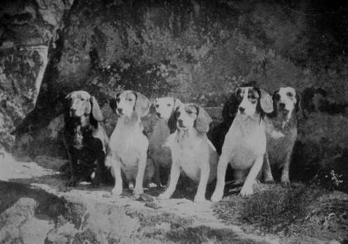
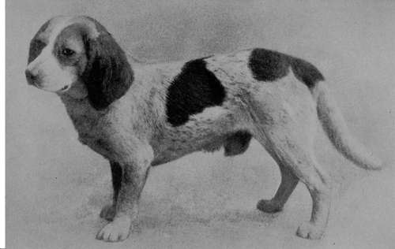

The Beagle
Description
This section is from the book "Sporting Dogs. Their Points And Management In Health, And Disease", by Frank Townend Barton. Also available from Amazon: Sporting Dogs; Their Points and Management in Health and Disease.
The Beagle
This is a very ancient variety of sporting dog, and one that was much in favour during the Elizabethan period, these miniature Hounds even at that time being spoken of as the "merry, singing Beagles".
The typical Beagle is a modification of the Foxhound, and has every appearance of having been derived, by selection, from this source.
Just as the Foxhound is used for hunting the fox, the Harrier for hunting the hare, so is the Beagle employed for rabbit-hunting—hence the term " Babbit Beagles," of which there are many small packs of these splendid little creatures up and down this, and other countries sometimes used for hare-hunting.
The smaller ones—Pocket Beagles in particular— are lovely little Hounds, and to the sportsman who loves hunting on foot, they are ideal field companions.
Typical specimens of the breed are, in our opinion, handsome ; their symmetrical form and workmanlike appearance carry an irresistible charm into the heart of the rabbit-hunter.
There is also the Rough-coated Beagle, and for these a class is usually provided at the Kennel Club and Cruft shows, in London.
In order to breed Pocket Beagles it is advisable to select as small a sire and dam as possible, because there seems to be a natural tendency for these Hounds to become over, rather than under, sized.
By instinct, the Beagle seems to take to work.
Taking puppies out along with a " schoolmaster " or " mistress" will generally be sufficient education, if carried out in systematic lessons.
These Hounds are, as a rule, quiet and affectionate, and some are not at all bad house dogs, though, of course, this is quite outside the uses for which they have been designed.
When purchasing Beagles, more especially for work, there are several important matters to look to.
Buy Hounds having a dense, rather coarse coat; short, strong, upright pasterns, cat-like feet, short back, heavily muscled on the quarters and second thighs, and well-hearted, i.e., a deep chest and well-sprung ribs.
A Group of Leyswood Beagles.
Pocket Beagle Cheerful of Rodnance (Property of Mrs Oughton Giles).
Good coupling is essential.
Long ears, low set on, fine, and hanging close to cheek are additional points of beauty.
The classes at the London Kennel Club shows are:—
1. Not exceeding 10 inches.
2. Not exceeding 12 inches.
3. Over 10 but not over 12 inches.
4. Over 12 but not over 16 inches.
5. In the Novice Class—any height.
6. Class for Rough Coats.
The following descriptions and standards of points will afford the reader the best information upon the subject, but as the English and American standards differ somewhat in details, the author deems it advisable to insert the descriptions framed by both clubs.
1. English Beagle Club. Description And Standard Of Points
Head
Of fair length, powerful, without being coarse, skull domed, moderately wide, with an indication of peak, " stop " well defined, muzzle not snipy, and lips well flewed.
Nose
black, broad, and nostrils well-expanded.
Eyes
Brown, dark hazel or hazel, not deep-set or bulgy, and with a mild expression.
Ears
Long, set on low, fine in texture, and hanging in a graceful fold close to the cheek.
Neck
Moderately long, slightly arched, and throat showing some dewlap.
Shoulders
Clean and slightly sloping.
Body
Short between the couplings, well let down in chest, ribs fairly well sprung and well ribbed up, with powerful, and not tucked-up loins.
Hind Quarters
Very muscular about the thighs, stifles and hocks well bent, the latter well let down.
Fore Legs
Quite straight, well under the dog, of good substance and round in bone; feet round, well knuckled up, and strongly padded.
Stern
Of moderate length, set on high, carried gaily, but not curled over the back.
Colour
Any recognised Hound colour.
Coat
Smooth variety: smooth, very dense, and not too fine or short. Rough variety: very dense and wiry.
Height
Not exceeding 16 inches.
General Appearance
A compactly-built Hound, without coarseness, conveying the impression of great stamina and activity.
Pocket Beagles must not exceed 10 inches in height, although ordinary Beagles in miniature. No point, however good in itself, should be encouraged, if it tends to give a coarse appearance to such minute specimens of the breed. They should be compact and symmetrical throughout, of true Beagle type, and show great quality and breeding.
Classification
It is recommended that Beagles should be divided at shows into Rough and Smooth, with classes for "not exceeding 16 inches and over 12 inches"; "not exceeding 12 inches and over 10" ; and "not exceeding 10 inches".
Standard Of Points
Skull Ears. Eyes.
6 10
3
5 10
5 15 10
5 15 10
6
Expression
Muzzle, jaws, and lip Coat.
Legs and feet Neck and shoulders Chest.
Back, loins, and ribs.
Hind-quarters.
Stern.
100.
Disqualifying Point
Any kind of mutilation. (It is permissible to remove the dewclaws).
2. American Beagle Club Points, Etc
Head
The skull should be moderately domed at the occiput, with the cranium broad and full. The ears set on low, long, and fine in texture, the forward or front edge closely framing and inturned to the cheek, rather broad and rounded at the tips, with an almost entire absence of erectile power at their origin.
Eyes
The eyes full and prominent, rather wide apart, soft and lustrous, brown or hazel in colour. The orbital processes well developed. The expression gentle, subdued, and pleading.
Muzzle
The muzzle of medium length, squarely cut, the " stop " well defined. The jaws should be level. Lips either free from, or with moderate, flews. Nostrils large, moist, and open.
Defects
A flat skull, narrow across the top of head, absence of dome. Ears short, set on too high; or when the dog is excited, rising above the line of the skull at their points of origin, due to an excess of erectile power. Ears pointed at tips, thick or boardy in substance, or carried out from cheek, showing a space between. Eyes of a light or yellow colour. Muzzle long and snipy. Pig jaws, or the reverse, known as undershot. Lips showing deep, pendulous flews.
Disqualifications
Eyes close together, small, beady, and Terrier-like.
Neck And Throat
Neck rising free and light from the shoulders, strong in substance, yet not loaded ; of medium length. The throat clean, and free from folds of skin ; a slight wrinkle below the angle of the jaw, however, may be allowable.
Defects
A thick, short, cloddy neck carried on a line with the top of the shoulders. Throat showing dewlap and folds of skin to a degree termed " throatiness".
Shoulders And Chest
Shoulders somewhat declining, muscular, but not loaded, conveying the idea of freedom of action with lightness, activity, and strength. Chest moderately broad and full.
Defects
Upright shoulders and a disproportionately wide chest.
Back, Loins, And Ribs
Back short, muscular, and strong. Loin broad and slightly arched, and the ribs well sprung, giving abundant lung-room.
Defects
A long or swayed back, a flat, narrow loin, or a flat, constricted rib.
Fore Legs And Feet
Fore-legs straight, with plenty of bone. Feet close, firm, and either round or harelike in form.
Defects
Cow-hocks and open feet.
Tail
The tail should be carried gaily, well up, and with some medium curve, rather short as compared with the size of the dog, and clothed with a decided brush.
Defects
A long tail, with a " teapot" curve.
Disqualifications
A thinly-haired, rattish tail, with entire absence of brush.
Coat
Moderately coarse in texture, and of good length.
Disqualifications
A short, close, and nappy coat.
Height
The meaning of the term " Beagle" (a word of Celtic origin, and in Old English, " Begele ") is small, little. The dog was so named from his diminutive size. Your Committee, therefore, for the sake of consistency, and that the Beagle shall be in fact what his name implies, strongly recommend that the height line shall be sharply drawn at 15 inches, and that all dogs exceeding that height shall be disqualified as overgrown and outside the pale of recognition.
Colour
All Hound colours are admissible. Perhaps the most popular is black, white and tan. Next in order is the lemon and white, the blue and lemon mottles; then follow the solid colours, such as black-and-tan, tan, lemon, fawn, etc. This arrangement is of course arbitrary, the question being one governed entirely by fancy. The colours first named form the most lively contrast, and blend better in the pack, the solid colours being sombre and monotonous to the eye. It is not intended to give a point value to colour in the scale for judging, as beforesaid all true Hound colours being correct. The following remarks on the subject are therefore simply suggestive.
General Appearance
A miniature Foxhound, solid and big for his inches, with the wear-and-tear look of the dog that can last in the chase and follow his quarry to the death.
Note
Dogs possessing such serious faults as are enumerated under the heading of " Disqualifications " are under the grave suspicion of being of impure blood. Under the heading of " Defects," objectionable features are indicated, such departures from the standard not, however, impugning the purity of the breeding.
Continue to:
- prev: Section D. Mixed Hounds. Chapter X. The Borzois Or Russian Wolfhound
- Table of Contents
- next: Chapter XI. The Dachshund